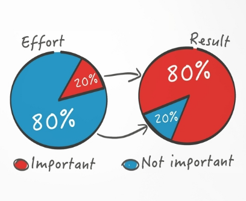
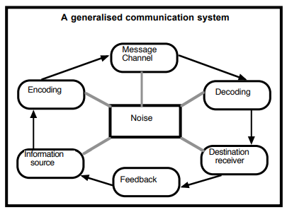

Chapter 2 of My Series on Business Communications Skills. This was a course of my final semester undergraduate studies. These chapters are a collection of my study and research on Business Communication Skills while doing my undergrad.
Keywords: Pareto, Communication Principles, Purpose of Business Communication, Barrier to effective communication, 4 Steps Communication Process, Communication Pyramid, Communication Image, Communication Cooperation
Communication and Co-Operation
The more skilled you are at communicating, the more often jobs will be done correctly and finished on time.
You are a good manager, leader, or organizer in business terms because you use persuasive communication to create co-operation.
Ethical Persuasion should respect the rights, goals, and emotions of everyone concerned. Should not involve – Overriding of people’s needs and getting whatever one wants at any cost.
Questions to Think About
A team leader wants their group to accept a new roster. The leader knows the new system will benefit all concerned, but to begin with, nobody will agree. How far should the leader use powers of persuasion to make the group cooperate and accept the plan?
Is it fair to use your skills as a communicator to persuade people to cooperate by paying their accounts on time? Is it OK to use the same skills to sell cosmetics at a party plan function to someone who has little need for the product and cannot afford it?
Sometimes people who have your best interests at heart try to stop you from doing something that could get you into trouble. How far should they go in using persuasion to prevent you from doing it?
Why Don’t People Co-Operate?
- Indirect Opposition
- The person to communicate is not on the same page as me. Persuasion based on sentiment or emotional appeal can help overcome this type of opposition.
- Different Goals
Goals are different from mine. Logical Reasoning is the key to success.
Justifiable Opposition - If the reasons are justifiable, then I should be the one to co-operate.
Unjustified Opposition - Selfish and Unwilling – Not interested in what I want.
Interpersonal Communication
- Aggressive, Passivity, Manipulativeness – Flaws: Ineffective, Stressful, and Counterproductive.
- Assertiveness – Most significant way to communicate, interact with other people.
Example of Assertiveness: Would you..; this would mean…; I would feel…
Communication Pyramid
A complex network of attitudes, beliefs, prejudices, assumptions, ideas, associations, emotions, and memories.
The Pareto Principle can often apply to communication, as well as many other aspects of the business. The Pareto Principle (also known as the 80-20 rule) states that about 80% of the consequences are produced by 20% of the causes for many phenomena.
Expanding the business with 80/20 rule. 20% effort for important results in 80% better yield.

Key Takeaways
- The law of 80-20 claims that 80% of outputs (outputs) come from 20% of triggers (inputs).
- You consider the 20 percent of factors in the 80-20 rule that will yield the best results.
- A concept of rule 80-20 is to identify the best assets of an organization and make efficient use of them to generate maximum value.
- This “rule” is a guideline and not a hard-and-fast math statute.
The essence of the 80-20 rule is to define the best assets of an organization and use them effectively to achieve full value. For example, a student will seek to determine which sections of a textbook would produce the most amount for an upcoming test and concentrate on those first. However, that doesn’t mean the student can neglect the other sections of the textbook.
Observation or Science?
The Pareto rule is a matter of observation. This is not scientifically verified. There is always a possibility, therefore, that the rule may not suit all situations. Any legitimate application will deal with clearly distinct data points which would have been established in any concise explanation of the procedure. As was acknowledged, the fundamental mathematical relationship representing any complex process would be different.
Communication Model
When one communicates, he/she is trying to establish commonality with another person. Share information – Verbal/Non-Verbal Communication.
Communication process requires four elements;
- A Message
- A Source of this Message
- A Communication Channel
- A Reciever
The information you want to share needs to be encoded into transmittable form, transmitted, and decoded by the receiver. Noise – Anything that distorts the message. Final element of the process – Feedback.
Communication and Image
| Self Image (I think I really am) |
Projected Image (I Want Others to See) |
External Image (Others Actually See) |
| A person who exerts major control or influence. | A Really important link in the company. | A bossy secretary with an inflated view of their own importance. |
| Struggling with some personal relationship at work. | A high achiever. | An abrasive manager. |
| A person who has to work as twice as hard as everyone else to be certain of success. | A hard worker who can handle any given task. | A workaholic who pushes himself twice as hard as others. |
| Struggling Entrepreneur | Successful Tycoon | Battling to Survive |
| Discount Retailer | Market leader price setter | Alternate, Secondary Supplier |
Purpose of Business Communication
- Basic for effective leadership: The prime requisite of a promising business leader is the “ability to communicate.”
- Sharing ideas and information: Business activities require human being to interact.
- Rational decision making: Communication helps to obtain data for decision making.
- Performance of Managerial Functions: It is through communication that any organization becomes an open system interacting with its environment, a fact whose importance is widely known.
- Developing company’s public image: Ability to communicate orally and in writing affects the company image.
- Helping delegation of authority and responsibility: Through downward communication managers delegate authority and responsibility to its subordinates.
- Explaining policies and programs: It is communication that can explain the policy and program to the subordinates.
- Basis of information: Communication acts as a basis of information to the whole organization and helps the employees to perform their respective jobs.
Barriers to Effective Communication
Sender Related Barriers
- Lack of communication goals
- Absence of communication skills
- Wrong choice of media
- Abstracting - It may be understood as an act of focusing attention on some details and omitting others.
- Absence of interpersonal sensitivity - In describing a situation unfavorable aspects are emphasized.
- Inconsistent behavior - Insensitive individuals often use a language which is offensive to the receiver.
- Differing frames of reference - Lack of shared experience may result in miscommunication.
Receiver Related Barriers
- Negative attitudes and opinions - Wrong personal attitudes and opinions of receiver often act as barriers to effective communication.
- Wrong inferences - Conclusions based on facts are called inferences.
- Poor retention - An Average listener can retain only one-half of the message being heard.
- Non-evaluation of the message due to distrust of the receiver - The receiver has a tendency to evaluate the sender and the message.
- Selective and poor listening - Selective listening refers to the people’s tendency to hear only what they want.
- Perceptions - Stereotyping refers to the tendency to categories people into a single class on the basis of some trait. Projection is a perceptual process by which we try to attribute our own thoughts and feelings to others.
- Lack of responsive feedback - An inappropriate response hurts the sender’s ego or feelings.
Sender and Receiver Related Barriers
- Status consciousness - If the sender is excited, nervous and perplexed, he will not be in a position to organize his message properly.
- Emotions - Emotions, be it either from the side of the sender or the receiver, may create a barrier.
- Interpretation of words - A single word that is used by the sender with an intended meaning may convey different meaning to the receiver.
Situation Related Barriers
- Noise
- Communication climate
- Distance
- Mechanical Failure
- Time pressure
- Information overload - The receiver cannot accommodate a heavy load of message from the sender.
- Jargon - Each “profession has its special vocabulary. When it is used outside the group, it becomes unintelligible.
Ways to Improve Communication Effectiveness
- Communication training
- Enhancing language knowledge
- Providing communication equipment’s
- Appropriate organizational structure
- Use of informal communication
- Developing interpersonal trust
- Listening
- Effective feedback
- Nondirective counseling
- Nonverbal communication
- Motivation
References
- Rentz, K., & Lentz, P. (2014). Lesikar’s business communication. Mcgraw-Hill/Irwin.
- Understanding the Pareto Principle (The 80/20 Rule) – BetterExplained. Betterexplained.com. (2020).
- Tardi, C., & Cheng, M. (2020). How to Apply the 80-20 Rule. Investopedia.
- Countdowns methods of communication and organisation. UKEssays.com. (2020).